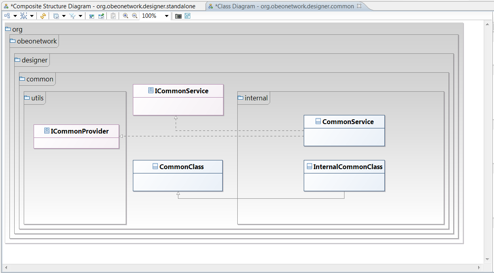
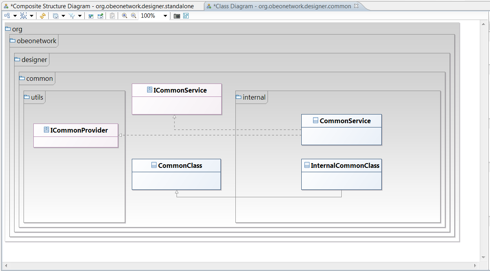
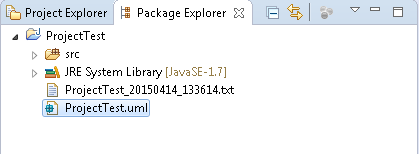

UML to Java generator & reverse Reference documentation
A UML to Java generator module and a Java to UML reverse module are available along with UML Designer.
You can install them via the UML Discovery catalog, or via the "UML Designer update site ":.. /download/index.html.
UML to Java
Generate code from any kind of UML model…
The UML to Java code generator let you generate code from any UML model compatible with the Eclipse UML2 project. You can build your model with the tool of your choice like the regular tree-based UML editor or even UML Designer.

 

With a dedicated launch configuration
Forget the properties files of a basic Acceleo generator, this new version of the UML to Java generator comes with a dedicated launch configuration where you can select all the details of the generation. This launch configuration can also be saved on your disk and shared with your team, giving you that way, the ability to reproduce easily a generation with specific settings. In this new launch configuration, you can choose the types to ignore, the Java runtime environment to associate with the generated project and much more.

Support for the component diagrams
The generator now consider components as first class citizens. The generation will not use a regular folder as a target but instead, it will generate a new Java project for each components in your model. You can even opt-in to have Eclipse plug-ins and features generated to represent your component architecture. With this option, you will have an internationalized MANIFEST.MF files with exported and imported packages along with features.xml files grouping your plug-ins just like in your model. If your model does not have any component, you can configure in the launch configuration the name, classpath and Java runtime environment of the default Java project to create for your code.

Java to UML
The Package Explorer view shows all the projects in your workspace and the files they contain. Right click on your project (or package) and select the “Reverse Java code” menu entry to generate the UML model.

In either, the following window will appear:

Here are the different editable parameters:
- Container : where the generated files will be created
- File name : Name of the generated file
- Limit visibility : the minimum visibility (private, protected, etc…) of the elements to reverse
- Logging Level : verbosity settings for the logging mechanism
- Model Imports : select UML models containing profile definitions that are used in your code to avoid re-generating them
- Activity Generation :
- None : The tool generates no activity diagrams
- Annotated only : The tool will generate only the annotated diagrams
- All : The tool will generate all diagrams
When you are done, click Finish to create the reverse file(s).
If you choose to generate only the UML file, two files will be generated in the package or project you selected: the log file and the model uml

Double click on the “.uml” to open it and you will obtain a similar window to the following: